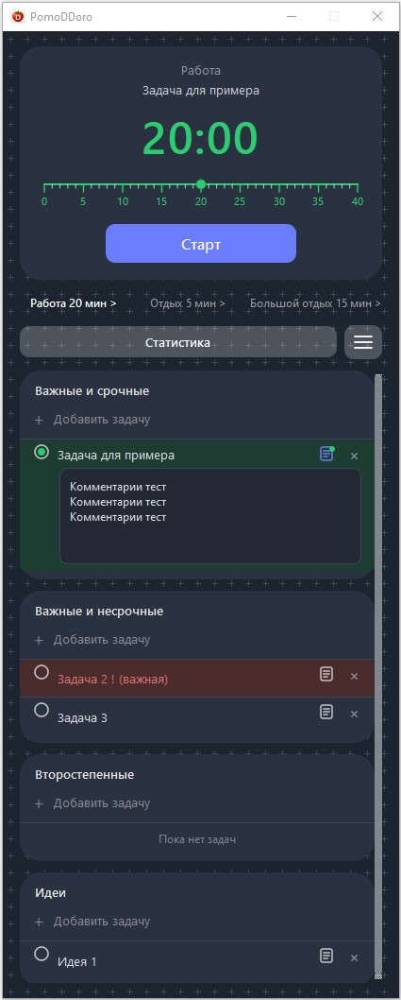
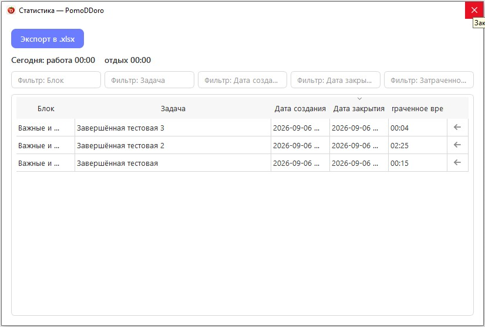
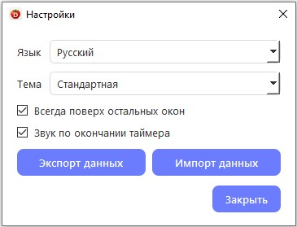

PomoDDoro
работай с фокусом
Pomodoro-таймер с планировщиком задач, матрицей приоритетов, комментариями и статистикой затраченного времени. Светлая и тёмная темы, экспорт в Excel.

Возможности PomoDDoro
Приложение помогает не только соблюдать интервалы Pomodoro, но и организовать задачи, вести заметки и учитывать фактически затраченное время.
Pomodoro-таймер
Три режима — работа, отдых и большой отдых. Продолжительность от 1 до 40 минут настраивается перетаскиванием маркера.
Планировщик задач
Распределяйте задачи по четырём блокам в зависимости от важности и срочности. Поддерживается перетаскивание между блоками.
Активная задача
Выбранная задача отображается прямо на карточке таймера — вы всегда видите, над чем именно идёт работа.
Комментарии к задачам
Добавляйте подробное описание, ссылки, этапы выполнения и промежуточные итоги. Зелёная точка показывает, что комментарий заполнен.
Архив задач
Закрытые задачи не удаляются, а отправляются в архив. Их можно вернуть обратно в свой блок из окна статистики.
Учёт затраченного времени
Если задача закрыта вне активного таймера, приложение предложит указать фактически затраченное на неё время вручную.
Статистика
Отдельное окно с историей задач, сортировкой по колонкам, фильтрами и редактированием архивных записей.
Звуковое уведомление
По окончании интервала карточка таймера пульсирует, а звук привлекает внимание. Звук можно отключить в настройках.
Тёмная тема и языки
Стандартная и тёмная темы, русский и английский интерфейс. Режим «поверх всех окон» — чтобы таймер всегда был под рукой.
Экспорт в Excel
Выгружайте статистику затраченного времени в формат XLSX. Экспортируются только видимые строки — с учётом фильтров.
Экспорт и импорт данных
Переносите задачи, настройки и архив на другой компьютер одним ZIP-архивом через меню настроек.
Выделение важных задач
Добавьте «!» в название задачи — и строка будет выделена бледно-красным цветом среди остальных.
Почему PomoDDoro
Четыре причины выбрать именно этот Pomodoro-таймер.
Не просто таймер
Планировщик и таймер в одном приложении.
Матрица Эйзенхауэра
Задачи распределяются по важности и срочности.
Прозрачная статистика
Видно, сколько времени ушло на каждую задачу.
Полностью бесплатно
Без рекламы, подписок и регистрации.
Отзывы пользователей
Что говорят те, кто уже попробовал PomoDDoro.
«Наконец-то таймер, который не просто тикает, а показывает, над чем я работаю. Матрица задач — то, чего мне не хватало».
«Экспорт статистики в Excel — это то, что я давно искал. Теперь вижу, куда уходит время, и планирую день точнее».
«Тёмная тема и режим «поверх всех окон» — то, что нужно для длинных рабочих сессий. Плюс приятный интерфейс».
Интерфейс приложения
Все основные инструменты в одном окне: таймер, текущая задача, статистика и четыре блока планирования. Доступны светлая и тёмная темы.
Работайте с задачами, а не просто с таймером
Выберите задачу и запустите рабочий интервал. Активная задача отображается непосредственно в области таймера.
- четыре категории задач;
- перетаскивание задач между блоками;
- комментарии к задачам;
- настройка рабочего интервала и отдыха;
- видимый текущий прогресс таймера.

Тёмная тема для комфортной работы
Переключайтесь между стандартной и тёмной темой в настройках. Изменения применяются сразу — без перезапуска приложения.
- снижает нагрузку на глаза вечером;
- переключение в один клик;
- настройка запоминается между запусками;
- одинаковый функционал в обеих темах.
Главное окно в тёмной теме

Контролируйте затраченное время
В окне статистики собрана история выполненных задач и времени, которое было на них потрачено.
- сортировка по колонкам;
- фильтры по блоку, задаче и датам;
- редактирование архивных записей;
- восстановление случайно закрытой задачи;
- экспорт видимых строк в XLSX.
Окно статистики затраченного времени
Гибкие настройки под вас
В отдельном окне настроек собраны параметры интерфейса, звука и переноса данных.
- язык интерфейса: русский / English;
- тема: стандартная / тёмная;
- режим «поверх всех окон»;
- звук по окончании таймера;
- экспорт и импорт данных.

Окно настроек приложения
Матрица приоритетов
Разделяйте задачи по важности и срочности, чтобы понимать, чему уделить внимание прямо сейчас.
🔴 Важные и срочные
Задачи, требующие немедленного внимания.
🟡 Важные, но не срочные
Долгосрочные цели и стратегические задачи.
🟢 Второстепенные
Задачи, которые можно выполнить позже или делегировать.
⚪ Идеи
Заметки, гипотезы и идеи, которые пока не нашли своего места.
Частые вопросы
Короткие ответы на самые популярные вопросы о PomoDDoro.
Нужна ли установка?
Где хранятся мои задачи?
%APPDATA%\PomoDDoro\. Основные файлы — tasks.json и archive.csv.
Можно ли перенести данные на другой компьютер?
Что произойдёт, если закрыть задачу крестиком?
Почему не работает звук по окончании таймера?
Как изменить длительность интервала?
Что значит бледно-красный цвет задачи?
Требует ли программа прав администратора?
%APPDATA%.
Как экспортировать статистику в Excel?
Программа бесплатная?
Системные требования
- ОС: Windows 10 / 11
- Разрядность: x64
- .NET: .NET Framework 4.8+
- Тип: портативное приложение, установка не требуется
- Для экспорта в Excel требуется Microsoft Excel или совместимый редактор, например LibreOffice Calc.
Попробуйте PomoDDoro
Скачайте последнюю версию бесплатно и попробуйте работать с задачами более осознанно.